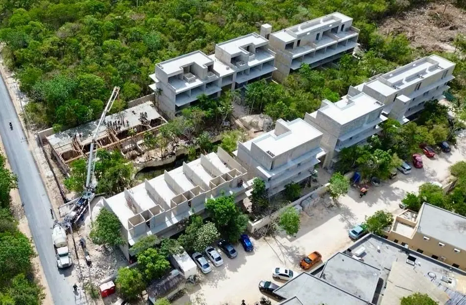

Para desarrolladores de torres residenciales en Cancún — Puerto Cancún, Malecón Tajamar, Bonampak, la Zona Hotelera y Costa Mujeres. Cimentación profunda con nivel freático alto, losas postensadas, diseño por viento para huracanes, estacionamiento en niveles, elevadores y amenidades en azotea, con un programa que su preventa puede prometer.

Pilas o losas de cimentación para el karst y el nivel freático.
Losas más delgadas, claros mayores y ciclos de piso más rápidos.
Cargas de viento, cancelería de impacto y anclaje de fachada para categoría 5.
Podio o sótano con bombeo e impermeabilización.
Elevadores, escaleras presurizadas, ductos y sistemas contra incendio.
Albercas infinity, gimnasios, spas y bares en azotea integrados a la estructura.
El programa de una torre es el ciclo de su piso tipo. Planeamos cimbra, postensado, pasos de instalaciones e inspecciones para que cada piso se repita en 7 a 10 días, con fachada e interiores avanzando unos pisos abajo. Esa previsibilidad es la que permite vender con fecha de entrega.
Cancún está sobre caliza kárstica con agua a uno o dos metros de la superficie. Los sótanos necesitan bombeo, impermeabilización y diseño por subpresión; muchas veces un podio sobre el terreno es más barato por cajón. Comparamos ambos antes de fijar el proyecto.
Cancún es el mayor mercado del estado: condominios verticales sobre Bonampak, Malecón Tajamar, Puerto Cancún y la Zona Hotelera, edificios medianos en Cumbres, Arbolada y Huayacán, y la cadena de suministro y mano de obra más completa de la región. Alturas y densidades las fija el programa de desarrollo urbano, y el nivel freático alto encarece los sótanos.
Las licencias las otorga el municipio de Benito Juárez; tramitamos uso de suelo, licencia de construcción con DRO y Protección Civil.
| Concepto | Costo |
|---|---|
| Estructura, núcleo y envolvente, por m² | $24,000–$38,000 |
| Torre de lujo con amenidades completas, por m² | $38,000–$60,000 |
| Estacionamiento en niveles, por cajón | $180,000–$400,000 |
| Sótano con nivel freático alto, por m² | $18,000–$32,000 |
| Torre de 60 unidades (≈9,000 m²) | $216M–$342M |
| Elevadores, por parada | $180,000–$350,000 |
En Cancún: Construcción de edificio de departamentos · Edificios de uso mixto · Construcción de supermercados · Construcción de agencias de autos · Construcción de cines · Construcción de escuelas privadas · Residencias para adultos mayores · Permisos de construcción · Construcción comercial
Constructora de departamentos, Riviera Maya · Constructora para desarrolladores · Cuánto cuesta construir un edificio de departamentos · Edificios de uso mixto · Guía de desarrollo de condominios
Calculadora de costo comercial · Plazas · Oficinas
Envíe los planos o el terreno; visitamos, revisamos uso de suelo y permisos, y le enviamos un presupuesto por partidas. Respuesta en 2 minutos.
Cotizar por WhatsAppSu opinión ayuda a otros propietarios a decidir, y a nosotros a mejorar.
Escribir una reseñaVer reseñas en Google